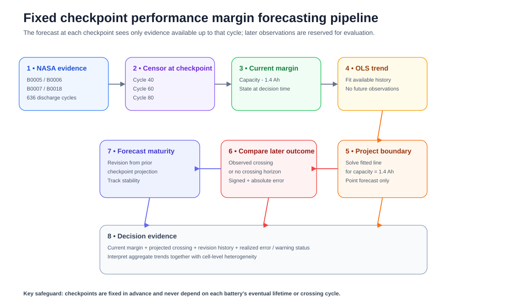

This portfolio brings together empirical studies, degree research, applied research projects and system implementation experience. The work spans engineering, information systems, operations and education, with a growing focus on Artificial Intelligence in Education. Data sources, methods, results and limitations are stated explicitly to distinguish empirical findings from applied implementation and ongoing research development.
Four empirical studies use identified external datasets, reproducible analysis procedures and explicit limitations. Each study is organized around a defined research question, transparent calculations and evidence that can be developed further into a formal paper.
Using 103 observed concrete mixture experiments, the analysis treats the laboratory observations as a systems engineering trade space. Pareto efficient alternatives are identified across cement use, slump and 28 day compressive strength.
A second formulation removes slump from the objective set and then treats it as an eligibility threshold. Comparing the resulting Pareto sets shows how strongly the engineering decision space depends on the definition of requirements.
Data source: UCI Concrete Slump Test, 103 laboratory mixture experiments, DOI 10.24432/C5FG7D.
Requirements Classification Evidence Triage on a Gold Standard Benchmark
The requirements classification analysis uses 571 eTour requirement elements and evaluates fine grained classification performance. It also examines how limited human review effort could be allocated when errors are unevenly distributed across requirement categories.
Gold labels are used only for retrospective diagnosis and to define an oracle ceiling. The operational review queue is ranked from model outputs without access to the answer key. The comparison quantifies both the potential value of targeted review and the gap between retrospective error knowledge and a deployable triage procedure.
Data source: eTour gold standard requirements benchmark and pinned NoRBERT/FTLR replication artifacts hosted through Zenodo.
NASA capacity trajectories and monitoring checkpoints

Fixed checkpoint forecasting and evaluation workflow
System Engineering
Forecast Maturity of Technical Performance Margin on NASA Lithium Ion Battery Aging Data
Four NASA lithium ion battery trajectories are evaluated at fixed cycle checkpoints to study the maturity of technical performance margin forecasts. Each forecast is restricted to information available at the corresponding checkpoint, preserving the temporal conditions of an actual engineering decision.
At each checkpoint, the analysis records current capacity margin, projected crossing of NASA’s 1.4 Ah end of life criterion, subsequent forecast revision and realized forecast error. Aggregate error declines as evidence accumulates, but behavior differs across cells and one battery produces an early false warning. Forecast stability therefore becomes part of the evidence used to judge decision readiness.
Data source: NASA Prognostics Center of Excellence Lithium Ion Battery Data Set, using cells B0005, B0006, B0007, and B0018.
Cross Project Heterogeneity in Quality Oriented Engineering Change
The analysis reexamines 2,533 manually classified commits from 54 Apache Java projects to determine whether a pooled maintenance profile represents individual software systems adequately. Each project is characterized by its observed proportions of perfective, corrective and other maintenance intent, together with uncertainty at the project level.
Cross project heterogeneity is quantified, tested again after progressively removing small project samples and decomposed into the project and category combinations contributing most strongly to the overall statistic. The results show that a pooled portfolio average can conceal substantial differences among individual project maintenance profiles.
Data source: Trautsch, Erbel, Herbold & Grabowski replication dataset on Zenodo, DOI 10.5281/zenodo.7078179.
Degree research covers my MBA study of leadership in flat organizations and my Informatics thesis on image retrieval using geographic metadata. These projects show the academic foundations behind my later work in organizational systems, information retrieval and data driven analysis.
MBA ThesisWürzburg University of Applied Sciences, now THWS2013 thesis; degree completed 2014
Leadership on Flat Organizational Structure: Focusing on Organization Using Self-Managing Team and Open Allocation Strategy
Conducted a qualitative comparative case study of Valve Corporation and GitHub on leadership development in flat organizations.
Examined self managing teams, open allocation, peer relationships, leader retention, and decentralized decision making using secondary sources and hermeneutic analysis.
B.Eng. ThesisInstitut Teknologi Bandung (ITB)2010
Image Retrieval System Using Geotagged Information
Developed and evaluated an image retrieval system combining textual information with geographic metadata stored in JPEG EXIF fields.
Used the vector space model and compared TF, IDF, and TF-IDF weighting schemes; evaluated retrieval using precision, recall, and Non-Interpolated Average Precision.
Demonstrated that geotagging could be integrated with text based retrieval to support location aware image search.
Research Projects
These projects document applied and published research in tourism, product development and energy systems. Each entry identifies my role, the research problem and the resulting scholarly or practical output.
Applied Research & Product Development2019
Design and Development of an Andaliman Dryer Using Quality Function Deployment
Coauthored and contributed to the design and development of a functional Andaliman dryer using Quality Function Deployment to translate user and product requirements into an engineering solution.
The team built the physical dryer and formally transferred the completed machine to a local farmer for practical use.
Output: Peer reviewed article in Jurnal Sains dan Teknologi, 19(2), 133 to 140; a functional Andaliman dryer delivered for field use; and an associated intellectual property output. DOI
Nationally Competitive Research2019
Performance Investigation of Geothermal Power Plant Based on Exergy and Exergoeconomic Analyses
Served as a research team member and coauthor in a quantitative evaluation of geothermal power plant performance using exergy and exergoeconomic approaches.
Output: Peer reviewed paper in IOP Conference Series: Materials Science and Engineering, 546, 072006 (2019). DOI
R&D EngineeringPT Cipta Srigati Lestari2011
Supply Chain Optimization Tools
Developed Java based optimization tools for B2B supply chain and operational decision support problems.
The work provided applied experience in computational modelling, optimization, and translating operational requirements into software based solutions.
System Experience
System experience documents implementation work in learning systems, teaching laboratories, digital health workflows and AI evaluation. These cases show how analytical and technical methods were translated into operational settings.
2025 to present
Independent Learning Consultant & AI Evaluation
Independent consulting
Since January 2025, my independent work has combined learning design, research synthesis and evaluation of AI outputs for response quality, domain accuracy and safety. The research portfolio extends this work into Python, learner modeling, retrieval evaluation and responsible AI evaluation.
2023 to 2024
Rocketversity Learning System Implementation & Evaluation
Suitmedia
Led Rocketversity with a team of four and established 120 SCORM compliant courses in a customized Moodle learning system. The work included auditing departmental material, structuring reusable courses and coordinating manager approval and trainer ownership. Around 100 employees were onboarded, and the project case study reported a 30% reduction in onboarding time.
2018
Astra Lean Production System Teaching Laboratory
Institut Teknologi Del
Contributed to a teaching laboratory for production systems and helped translate lean production concepts into structured practical activities covering 5S and 5R, waste identification, flow improvement, kanban, just in time production, standardized work and continuous improvement.
2015
OpenSRP Implementation & Field Performance Analysis
Summit Institute for Development
Supported implementation of an Android maternal and child health workflow system across 16 districts while directing four developers and six field workers. A field timing analysis identified an XLSForm performance bottleneck. I then coordinated an interim form restructuring approach that reduced loading time from as much as 20 minutes to under 10 seconds for most forms.
Contact
Open to learning design, L&D and learning technology roles, as well as doctoral research in Artificial Intelligence in Education, learning analytics and educational systems centered on human judgment and learning needs. Based in Medan, Indonesia and open to remote work or relocation.